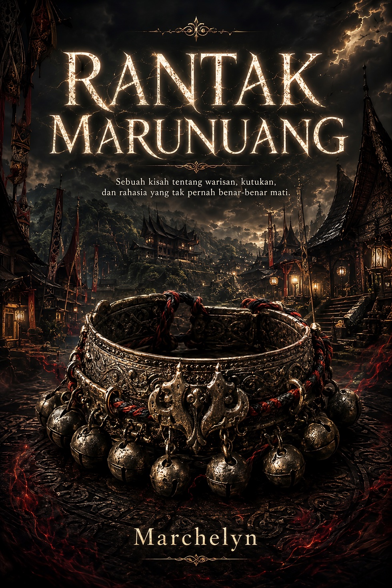
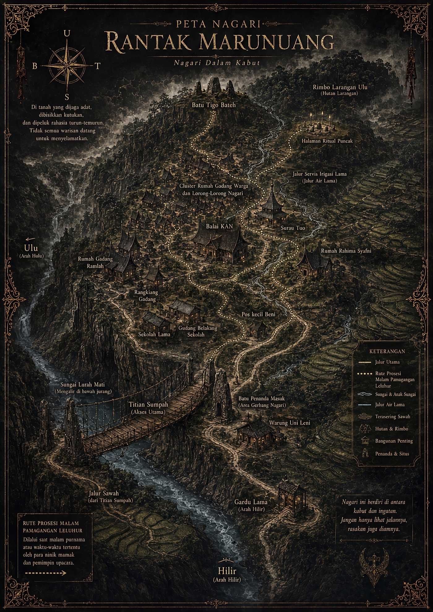

Kabut, beduk, pelita
Suara dan cahaya bukan dekorasi. Keduanya mengatur cara warga mengingat malam.
Novel Misteri Folklor Rasional
Di sebuah nagari yang dijaga adat, dibisikkan kutukan, dan dipeluk rahasia turun-temurun, Nadira pulang untuk membuktikan bahwa yang paling berbahaya bukanlah roh masa lalu, melainkan manusia yang tahu cara membuat satu kampung berhenti bertanya.

Dunia Cerita
Rantak Marunuang dibangun sebagai mystery folklor rasional: pembaca boleh merasa sedang membaca cerita kutukan, tetapi setiap rasa ganjil harus bisa diuji melalui ruang, waktu, dokumen, tubuh, dan tekanan sosial.
Suara dan cahaya bukan dekorasi. Keduanya mengatur cara warga mengingat malam.
Jembatan, jalur irigasi, titik buta, dan peta lama menjadi alat deduksi Nadira.
Hampir semua tokoh punya hubungan dengan tanah: waris, hutang, status, atau masa depan.
Yang berbahaya adalah orang yang memakai adat agar pembunuhan terlihat seperti takdir.
Peta Interaktif
Peta ini membantu pembaca memahami ruang cerita tanpa membuka jawaban besar. Pilih lokasi untuk membaca fungsi sosial, fungsi misteri, dan clue atmosferik yang aman.

Rute Prosesi
Di novel ini, ritual bukan gimmick. Ia adalah tata ruang, tata suara, dan tata ingat. Klik rute untuk melihat bagaimana sebuah prosesi bisa menjadi teka-teki fair-play.
Pembacaan Rute
Pilih satu titik prosesi untuk melihat kenapa ruang, suara, dan ingatan bisa menjadi bagian dari teka-teki.
Papan Clue
Pembaca yang teliti akan diberi tanda sejak awal. Website ini menyusun lapisan clue tanpa menyebut siapa pelakunya, bagaimana finalnya dibuka, atau twist akhirnya.
Warna yang salah posisi bukan sekadar salah tata. Ia bisa membuat warga membaca peristiwa dengan makna yang keliru.
Jika cahaya datang sebelum waktunya, bayangan juga datang sebelum kebenaran siap dilihat.
Tanah sawah, jalur irigasi, dan titian tidak meninggalkan jejak yang sama.
Ketika banyak saksi memakai suara sebagai patokan waktu, kesalahan kecil bisa terasa seperti kesaksian bersama.
Dokumen lama tidak hanya dibaca dari isinya. Kertas, warna, bekas simpan, dan stempel juga punya usia.
Dalam Rantak, nama bukan tempelan. Nama bisa menentukan tanah, marwah, dan siapa yang boleh berbicara.
Lensa Tokoh
Filter tokoh untuk memahami fungsi mereka di dunia cerita. Label di sini tidak membuka jawaban, hanya membantu pembaca mengikuti tekanan sosial di dalam nagari.
Glosarium & Companion
Bagian ini membantu pembaca memahami istilah Minang dan sistem sosial fiktif di novel. Rantak Marunuang adalah komposit fiktif, bukan representasi literal satu komunitas hidup.
Jejak 21 Bab
Bab-bab ini disusun sebagai jalur slow-burn: pulang, ritual, korban, arsip, badai, false solution, lalu deduksi akhir. Catatan di bawah tetap spoiler-safe.
Mini Interaktif
Pilih tiga alat baca Nadira. Website tidak memberi jawaban final, tetapi mengajari cara membaca misteri: bukan dengan menertawakan takut, melainkan dengan menguji urutan.
Janji Spoiler-Safe
Yang dibuka adalah cara membaca dunia: fungsi lokasi, tekanan tokoh, istilah adat, dan tipe clue. Jawaban besar tetap berada di novel lengkap.
Beli Novel
Baca dan beli Rantak Marunuang melalui halaman resmi Marchelyn. Versi Indonesia tersedia sekarang. Versi English untuk Google Play Books dan Amazon Kindle disiapkan menyusul.
Dunia Marchelyn